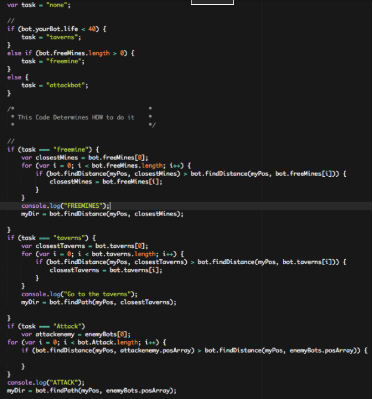
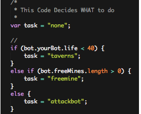
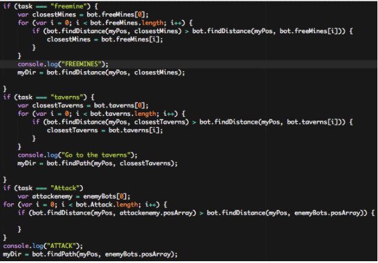

Vindinium is an AI (Artificial Intelligence) online game that has no set instruction for the bots used in them. The standard set for this game is of 4 bots that are programmed by 4 different programmers with different priorities. The priorities can vary on wanting Taverns(health regeneration), Mines, or attacking other players. The method that this game is played is in the priority that the bots are programmed to. During the game, the programmers don’t have control of the bots; whatever they are programmed with is what they are capable of doing. Once the game is begun, the first line of code/priority/function that their bot is programmed to is what it will initially do. It’s if another bot that has different priorities that intervenes with another bot that will lead to them attacking each other. Once the round ends and there is a declared winner that the programmers can reprogram their bot to potentially improve them. How do you win? In order for you to win is for your bot to get the most gold and hold it for the duration of the game. 
The code above is the programming that was added to my bot that makes it do what it does. The most common functions is go get taverns, get free mines, and attack players; these are the functions my bot is programmed with except the priorities of what to do first. 
*Notice that in the comment in the image above, it says “This Code Decides WHAT to do” * The section that this comment covers is the foundation to what your bot will do; which is get taverns, go for free mines, and attack bots. The basic instructions that my bot’s programming has is: if my bot’s life is below 40, the new task for it to do is get taverns/health regeneration. If the first task isn’t applicable, go for free mines. And if that isn’t applicable either, just attack bots. These set of instructions for the bot are just the foundation; they still need to be connected to an algorithm that will actually “tell” the bot how to perform them. The image below shows the actual algorithms that are stringed to the task that the bot is set to do.  So each task has its own set of instructions. The bots first task is go for free mines, so if it wants to go for free mines, it will need to find the closest one. In the code above, a variable is created called free mines that will hold the information of free mines that are available to get. After that line of code, a new variable is created called “i” that holds the information/value of 0. This line of code is called a for loop; this will go through every free mine and determine the value that the mine holds. Once it determines the value that every mine has, it will then find the distance between the position of my bot and the closest taverns. And if that is greater than the distance between my bot and the free mines. The closest mine will then become the free mine. This basically says that the closest mine will become the variable that represent the free mine since the original task was to go for free mines. Hence making the free mine the closest mine to first get.
The same instructions to get free mines is the same for getting taverns and attacking enemies. The only difference between the algorithms would be the variables used to represent the taverns and the enemy's. So if you are to look at the task you can also see that the order that they are placed are the same in the original “What to do” section. That noted, telling the bot HOW to do one of the task pretty much is similar to the rest of the instructions. Following the actual “how to” linked to perform one of the bots functions, a console.log function is added. The console.log function is what will be visible to the user. To break down the actual function, the term “console” can be considered the screen; the screen that will display the game. “Log” is text; it describes what will appear on the screen. So the log for every function is different depending on the function that it is assigned/under to. For example, the attack function is linked to a “log” that shows “ATTACK”; that will appear on the screen. When will it say this? Below the “console.log”, a variable myDir will perform the console.log once this variable is performed. This varies for every function and when it will display the console.log.
When creating the console.log function, try to make it related to the function it is under so the user will understand what is happening when the bot begins to do something. Now for ordering your priorities, I was primarily thinking about winning at the end, which is why I made my first task be go for free mines. Getting free mines to get the most goal is the way to win this game. After that, my second priority was get taverns/health. This was because I had to make sure my health was at a good point so I can continue to get health without the risk of being killed while getting free mines. But if all else fails, my bot will begin to attack other players.
What I learned about AI was that this game wasn’t exactly a good representation of AI. From my understanding AI means self thinking; this bot had programming that told it what to do in a certain situation. Programming this bot to do what I wanted wasn’t as complicated as I initially thought. At first I thought it would be difficult getting the bot to do a certain action when a situation presented itself but in reality, it was easy to give it basic task and how the computer ran through them and see which is applicable at that time. I believe giving this game the title AI scares people since they begin to imagine creating a self thinking computer but once you get down to the basics, it seems more reachable than it’s shown to be.